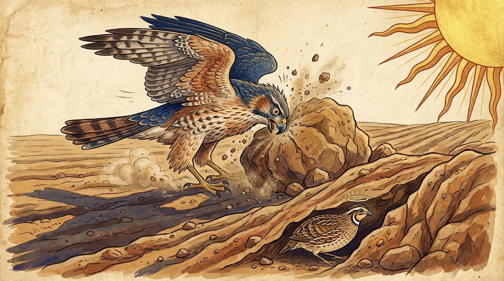

8. සකුණග්ඝි ජාතකය
“සෙනො බලසා පතමානො” (උකුස්සා වේගයෙන් කඩා වැටෙමින්) යන මේ දේශනාව බුදුරජාණන් වහන්සේ ජේතවනාරාමයෙහි වැඩවාසය කරන සමයෙහි ස්වකීය අදහසක් අනුව ‘සකුණෝවාද සූත්රය’ (සං. නි. 5.372) මුල්කරගෙන දේශනා කළ සේක. එක් දිනක් බුදුරජාණන් වහන්සේ භික්ෂූන් අමතා, “මහණෙනි, සිය පියා ගිය මගෙහි (තමන්ට උරුම විෂය ක්ෂේත්රයෙහි) යමින් ගොදුරු සොයව්” යන මේ සංයුත්ත නිකායේ මහා වග්ගයෙහි එන සූත්රාන්තය දේශනා කරමින්, “තෙපි තාම එහිම රැඳී සිටිව්! පෙර තිරිසන්ගත සතුන් පවා සිය පියා ගිය මග හැර නුසුදුසු තැන්වල හැසිරෙන්නාහු සතුරන්ගේ අතට පත්ව, තම නුවණින් හා උපාය කුසලතාවයෙන් සතුරන්ගේ අතින් මිදුණාහ” යි වදාරා අතීත කථාව ගෙනහැර දැක්වූ සේක.
පෙර බරණැස් නුවර බ්රහ්මදත්ත රජු රාජ්ය කරන සමයෙහි බෝසතාණන් වහන්සේ වටු කුරුළු යෝනියෙහි (කැට කුරුල්ලෙක්ව) ඉපදී, සී සාන විට නඟුලට කැපී මතු වූ මැටි කැට ඇති තැන වාසය කළේය. හෙතෙම එක් දිනක් “තමන්ට අයිති ප්රදේශයේ ගොදුරු ගැනීම හැර අනුන්ගේ සීමාවෙහි ගොදුරු ගන්නෙමි” යි සිතා වනාන්තර කෙළවරට ගියේය. ඉක්බිති එහි ගොදුරු සොයන ඌ දැක උකුස්සියක් වේගයෙන් පැමිණ අල්ලා ගත්තාය. උකුස්සිය විසින් ගෙනයනු ලබද්දී ඒ වටු කුරුල්ලා මෙසේ විලපන්නට විය: “අපි අපට අයිති නැති ස්ථානයෙහි, එනම් අන් අයගේ කොටසෙහි හැසිරුණෙමු ද, ඒ අපි මහා අවාසනාවන්තයෝ වෙමු; මඳ පින් ඇත්තෝ වෙමු. ඉදින් අද අපි අපට අයත් කොටසෙහි, එනම් පියා උරුම කර දුන් සීමාවෙහි හැසිරුණෙමු නම්, මේ උකුස්සියට මා හා සටන් කිරීමට (මා අල්ලා ගැනීමට) හැකි නොවනු ඇත.” එවිට උකුස්සිය, “හොඳයි වටු කුරුල්ල, නුඹේ පියා නියම කළ සීමාව කුමක්ද?” යි ඇසුවාය. “සී සාන විට නඟුලට කැපෙන මැටි කැට ඇති තැන අපේ සීමාවයි,” යි වටුවා කීය. ඉක්බිති ස්වකීය බලය ගැන උඩඟු වූ උකුස්සිය, “වටු කුරුල්ල, ඔබ යන්න. එහි ගියත් ඔබට මගෙන් ගැලවීමක් නැතැ” යි කියා ඌ මුදා හැරියාය. වටු කුරුල්ලා එහි ගොස් ලොකු මැටි පිඩැල්ලක් මත නැගී, “උකුස්සියනි, දැන් එව!” යි කියමින් උකුස්සියට අභියෝග කළේය. ඌ සිය බලය ගැන දැඩි විශ්වාසයෙන් යුතුව පියාපත් දෙක මනාව පිහිටුවාගෙන වටු කුරුල්ලා වෙත වේගයෙන් පැමිණියාය. කැට කුරුල්ලා මේ උකුස්සිය ඉතා වේගයෙන් තමා වෙත පැමිණියේ යැයි දැනගත් විට, ක්ෂණයකින් පෙරළී ඒ මැටි පිඩැල්ල අතරට රිංගා ගත්තේය. වේගය පාලනය කරගන්නට නොහැකි වූ උකුස්සිය ඒ මැටි පිඩැල්ලෙහිම පපුව ඔබා ගත්තාය. මෙසේ උකුස්සිය බිඳුණු හදවතින් හා පිටතට නෙරා ආ ඇස් ඇතිව මරණයට පත්වූවාය.

බුදුරජාණන් වහන්සේ මේ අතීත කථාව ගෙනහැර දක්වා, “මහණෙනි, මෙසේ තිරිසන්ගත සත්තු පවා නුසුදුසු තැන්වල හැසිරීමෙන් සතුරන් අතට පත්වෙති. ගොදුරු ගැනීමේදී තමන්ගේ පියා ගිය මග හෙවත් තමන්ට උරුම සීමාවේ හැසිරෙන්නේ නම් සතුරන් අතට පත් නොවෙති. එබැවින් තෙපිත් අනුන්ගේ සීමාව වන නුසුදුසු තැන්වල නොහැසිරෙව්. මහණෙනි, අනුන්ගේ සීමාවෙහි හැසිරෙන තැනැත්තා තුළින් මාරයා අවස්ථාවක් ලබයි; මාරයා අරමුණක් ලබයි. මහණෙනි, භික්ෂුවට නුසුදුසු තැන හෙවත් අනුන්ගේ සීමාව කුමක්ද? මේ පඤ්ච කාම ගුණයයි. ඒ පහ මොනවාද?
- ඇසට අරමුණු වන රූපය,
- කනට අරමුණු වන ශබ්දය,
- නාසයට අරමුණු වන ගඳ සුවඳ,
- දිවට දැනෙන රසය,
- කයට දැනෙන ස්පර්ශය.
මහණෙනි, මේ භික්ෂුවට නුසුදුසු තැනයි; අනුන්ගේ සීමාවයි” යනුවෙන් වදාරා අභිසම්බුද්ධ වී
“තමන්ට සුදුසු ගොදුරු බිමෙහි රැඳී සිටි වටු කුරුල්ලා වෙත, වේගයෙන් හඹා ආ උකුස්සා ක්ෂණිකව එහි ළඟා වූ නමුත්, ඒ හේතුවෙන් (වේගය පාලනය කරගත නොහැකිව) ඌ මරණයට පත් විය.”
යන පළමු ගාථාව වදාළ සේක.
එහි බලසා පතමානො යනු ‘වටු කුරුල්ලා අල්ලා ගනිමි’ යි සිතා බලයෙන් හා වීර්යයෙන් වේගයෙන් පැමිණීමයි. ගොචරඨායිනං යනු තමන්ගේ සීමාවෙන් නික්මී ගොදුරු පිණිස වනය කෙළවර සිටියා වූ ද, පසුව නැවත තමාගේ විෂය සීමාවට පැමිණියා වූ ද වටුවා ය. අජ්ඣප්පත්තො යනු (උකුස්සා) පැමිණියේය යන්නයි. මරණං තෙනුපාගමී යනු ඒ වේගයෙන් පැමිණීම හේතුවෙන්ම ඌ මරණයට පත් වූ බවයි.
උකුස්සා මරණයට පත් වූ විට වටු කුරුල්ලා එළියට අවුත්, “මා විසින් සතුරාගේ පිටුපස (පරාජය) දකින ලදී” යැයි සතුටු වී, උකුස්සාගේ පපුව මත සිට උදන් අනමින් දෙවන ගාථාව ද වදාළේය.
“උපාය නුවණින් යුක්ත වූ, පිය උරුමය වූ ගොදුරු බිමෙහි ඇලුණු මම, සතුරා පහ වූ කල්හි මාගේ යහපත (ජීවිත ආරක්ෂාව) දකිමින් සතුටු වෙමි.”
යන දෙවන ගාථාව කීවේය.
එහි නයෙන යනු උපායෙනි. අත්ථමත්තනො යනු තමන්ගේ නිරෝගී බව නැමැති අභිවෘද්ධියයි.
බුදුරජාණන් වහන්සේ මේ ධර්ම දේශනාව ගෙනහැර දක්වා චතුරාර්ය සත්යය ප්රකාශ කරමින් ජාතක කථාව නිමවා වදාළ සේක. ඒ සත්ය දේශනාව අවසානයෙහි බොහෝ භික්ෂූහු සෝවාන් ඵල ආදියට පැමිණියාහුය. “එකල උකුස්සා වූයේ දේවදත්ත ය. කැට කුරුල්ලා (වටුවා) වූයේ මම ම යැ” යි වදාළ සේක.
අටවැනි වූ සකුණග්ඝි ජාතක වර්ණනාව නිමාවිය.